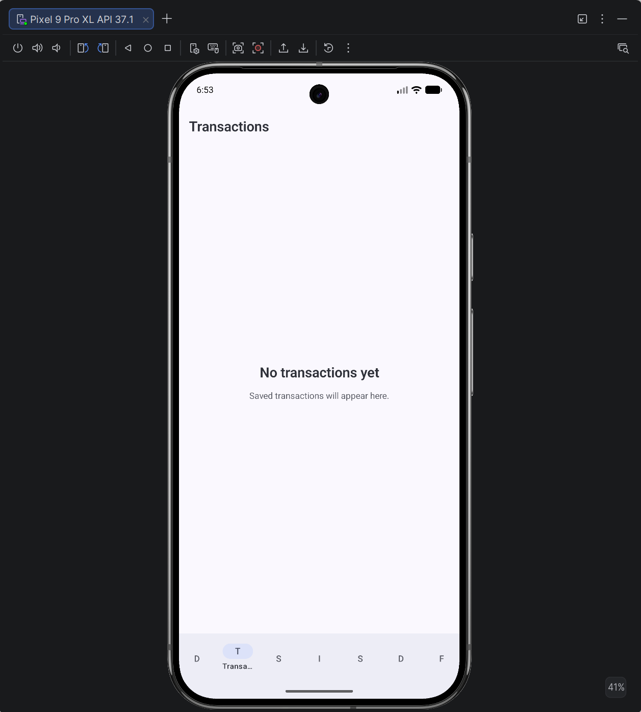
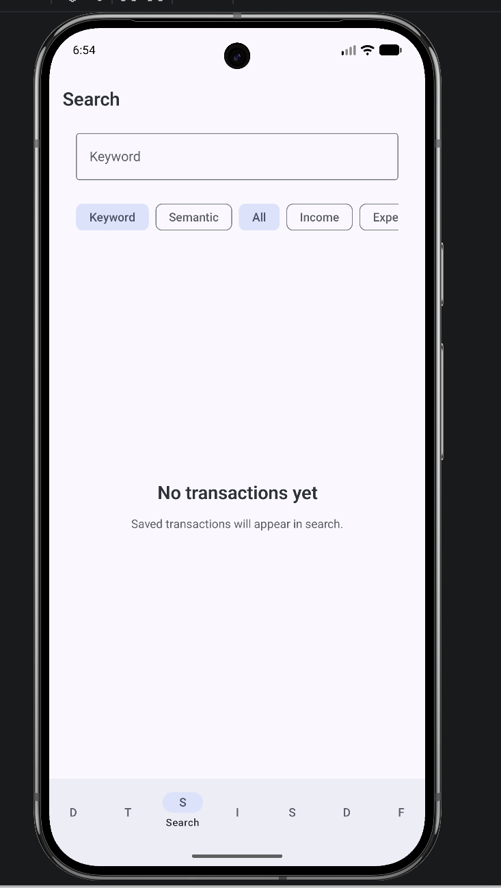
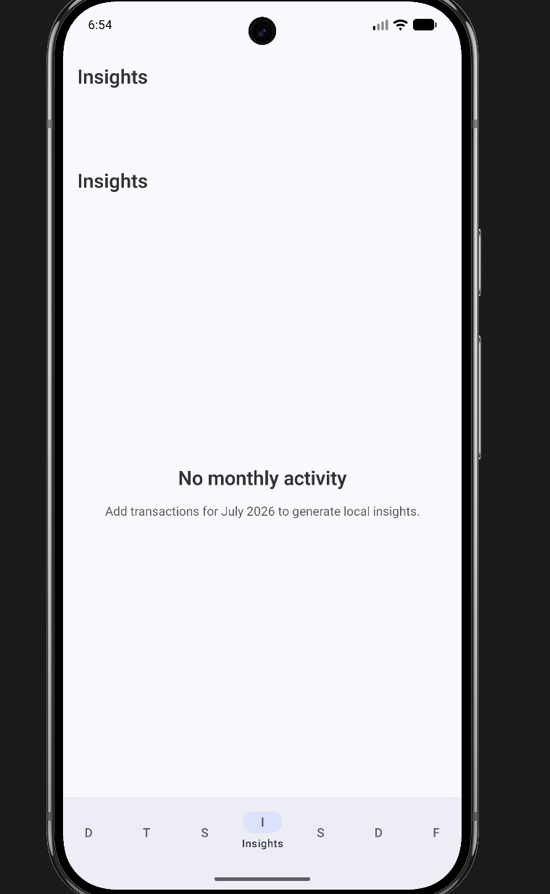
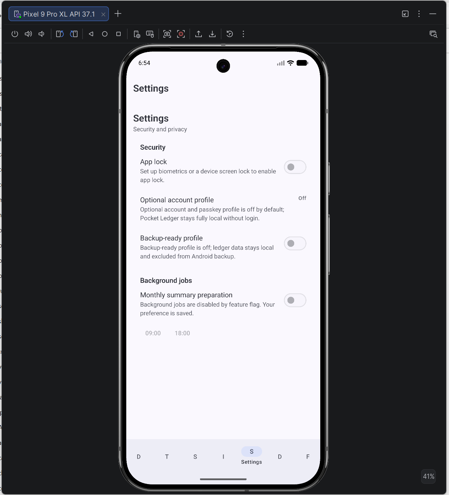

Get started in five steps
The bottom bar is your home base. On a phone it always shows the five primary destinations by their complete names.
1
Set your first budget
Open Dashboard and choose Set budget. Enter a name, amount, currency, date period, and—if useful—a category. The dashboard will use it to calculate progress.
Tip: Use one currency for a monthly overview; transactions in other currencies are kept separate.
2
Record income and expenses
Go to Transactions to add and manage ledger entries. Record the amount, type, date, merchant or note, and optional category or tags. Saved entries remain available offline.
- Use Income for money received.
- Use Expense for money spent.
- Open an existing row to review or edit it.

3
Find anything quickly
Use Search to look through merchant names, notes, and sources. Narrow results by income or expense, category, tag, date, amount, currency, or recurring status.
Keyword search is the reliable local mode. Semantic search is an optional preview and may be unavailable.

4
Review monthly insights
Insights turns local transaction history into monthly signals: cash flow, spending concentration, and budget progress. Add transactions for the current month before expecting a summary.
These core insights are deterministic and can be generated without sending ledger content to a cloud service.

5
Choose your security settings
Open Settings to enable App Lock when biometrics or a device screen lock is available. Optional account, backup-ready profile, and background summary controls remain off or unavailable until their prerequisites are met.
Pocket Ledger can remain fully local and usable without signing in.

Privacy you can understand
Offline-first storage
The Room database on your device is the source of truth for ledger data.
Sensitive data stays out of logs
Amounts, notes, merchants, search text, budgets, credentials, and exports must not be logged.
You control optional features
Account, backup, AI, and future sync capabilities are gated and do not replace the local-first experience.